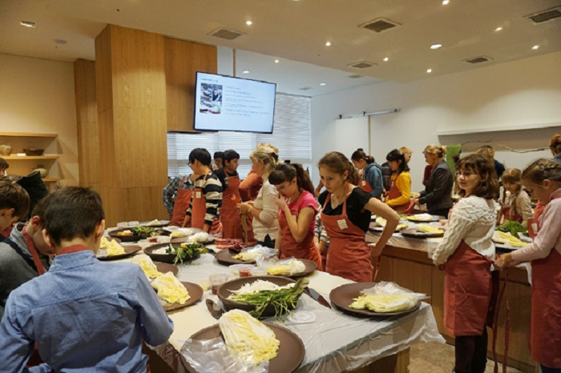
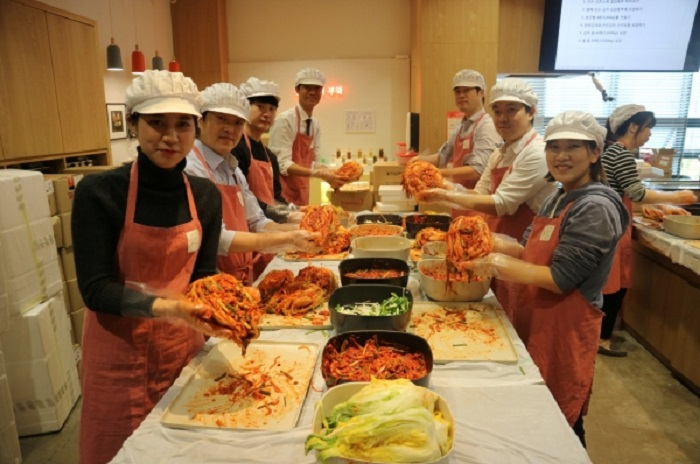
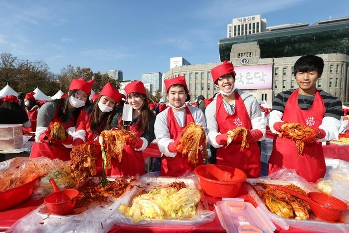
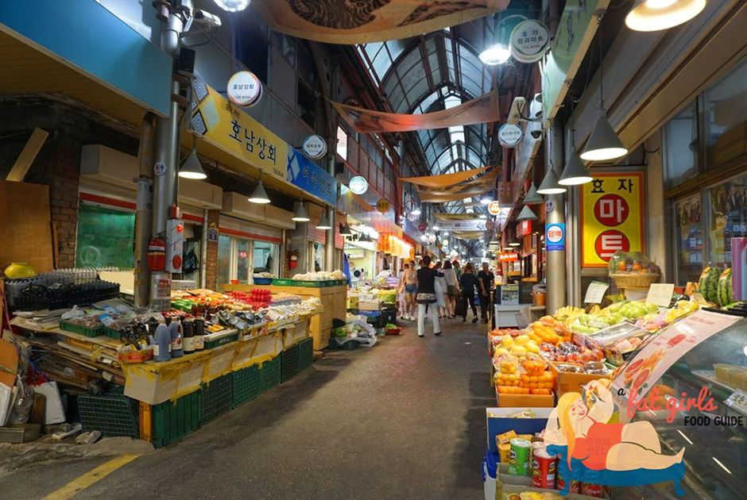
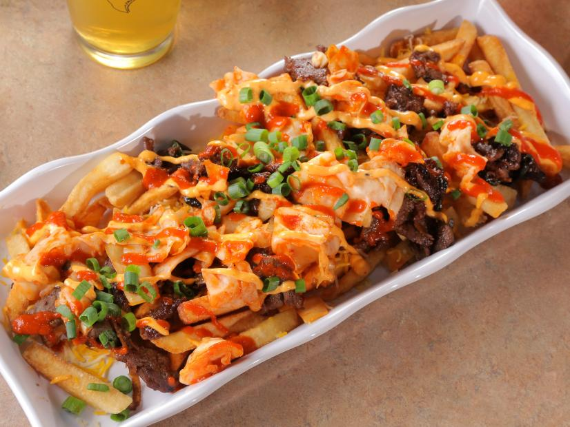

Du lịch Hàn Quốc
Welcome to Korea
Welcome to Korea

Kim chi Hàn Quốc là một món ăn phụ, thường được dùng trong các bữa ăn hàng ngày của người dân. Với hơn 100 loại được biết đến, kim chi có mặt ở khắp mọi nơi trên đất nước Hàn Quốc. Nhưng có lẽ, nơi tốt nhất để bạn có thể tìm hiểu ngọn ngành về món ăn mang tính dân tộc cùng với tất cả các biến thể của nó là Bảo tàng Kimchikan ở Insadong.
Tại đây, du khách có thể tìm hiểu một cách chi tiết về kim chi Hàn Quốc. Từ các loại khác nhau cho đến thành phần của nó. Họ cũng có thể cho bạn quan sát cận cảnh vi khuẩn axit lactic, chúng làm cho kim chi trở nên tốt cho sức khỏe con người hơn khi ăn. Ngoài các hiện vật được trưng bày thường xuyên, Bảo tàng Kimchikan còn tổ chức các buổi học nếm kim chi và các lớp học nấu ăn đặc biệt. Một khóa học giúp cho du khách có thể thử chế biến kim chi baek ( kim chi trắng, không có bột ớt) và kim chi tongbaechu (kim chi cải thảo truyền thống).
Sẽ có các hướng dẫn viên có thể nói chuyện bằng tiếng Anh, tiếng Nhật và tiếng Trung, trong suốt quá trình bạn làm kim chi. Và khi tham quan tại bảo tàng, hướng dẫn viên sẽ thay phiên phục vụ các đoàn trong những thời điểm đã định. Bạn có thể book lịch trực tuyến thông qua trang web chính thức của bảo tàng.

Không có món ăn nào gắn liền với Hàn Quốc và văn hóa của họ hơn kim chi, và đây là một lý do chính đáng. Bạn có biết, người Hàn trung bình tiêu thụ khoảng 22kg món kim chi Hàn Quốc mỗi năm. “Sẽ thật là kì quặc nếu món kim chi không được đem ra trong mỗi bữa ăn hàng ngày, bởi đây là một phần văn hóa của chúng tôi.”
Học viện Kimchi Seoul, nơi cung cấp một loạt các lớp học do các giảng viên chuyên môn phụ trách. Sau các buổi học dạy nấu ăn từng bước chi tiết cho các học viên, người tham gia có thể nếm thử món kim chi do chính họ làm trong ngày. Có cả dịch vụ đóng gói hút chân không thực phẩm, giúp bạn có thể dễ dàng mang kim chi về nhà và thưởng thức sau đó.
Để kỷ niệm ngày kimjang – thời điểm làm kim chi theo mùa trong năm, lễ hội kim chi Hàn Quốc đã được công nhận và là Di sản văn hóa phi vật thể của UNESCO. Lễ hội Kimchi Seoul chính là cầu nối giữa truyền thống lâu đời và cuộc sống hiện đại ngày nay, mang ẩm thực Hàn Quốc đến gần hơn với bạn bè quốc tế.
Được tổ chức vào tháng 11 hàng năm, lễ hội là nơi quy tụ hàng nghìn người tham gia sự kiện làm kim chi lớn. Tại đây, du khách có thể học cách làm kim chi của riêng mình từ các bậc thầy về kim chi. Hay xem các buổi biểu diễn liên quan đến kim chi, thậm chí là mua nhiều loại kim chi cùng một lúc từ các vùng khác nhau của Hàn Quốc. Quá thú vị phải không nào, vậy các tín đồ mê kim chi còn chần chừ gì mà không book ngay một tour du lịch Hàn Quốc và trải nghiệm ngay thôi nhỉ?
Gwanghwamun Jip nằm gọn trong một góc hẻm nhỏ bé. Địa điểm bán kim chi này khá nhỏ nhưng luôn thu hút đông đảo lượng khách địa phương ghé tới. Gwanghwamun Jip là một cơ sở nổi tiếng với món kimchi jiggae hay người ta vẫn thường gọi là món kim chi hầm. Kim chi được nấu trong một chiếc nồi thật lớn, món hầm này được nấu trực tiếp tại bàn lớn. Khi nó sôi, vị chua cay bốc lên sẽ khiến bạn phải chảy nước miếng. Món kim chi Hàn Quốc mộc mạc làm nên gia vị cho nước dùng. Trong khi những miếng thịt lợn béo ngậy làm nức lòng thực khách đang đói. Ngoài ra, sự kết hợp hoàn hảo với nước ướp gyeran (trứng tráng cuộn) mềm mại và đầy hương vị, món ăn thịnh soạn này chính là một ý tưởng hoàn hảo để bạn thưởng thức trong những ngày mùa đông lạnh giá tại Hàn Quốc.
Với vị trí thuận lợi, chợ Tongin nằm ở phía Tây Cung điện Gyeongbokgung được mệnh danh là một trong những khu chợ truyền thống quyến rũ nhất của Seoul. Nơi đây khá nhộn nhịp và đông đúc. Chợ Tongin đóng vai trò là một dấu mốc lịch sử quan trọng.
Theo kinh nghiệm du lịch Hàn Quốc, chợ Tongin được thành lập cho cư dân Nhật Bản vào năm 1941, khi mà Hàn Quốc vẫn nằm dưới sự cai trị của Nhật Bản. Trong những năm gần đây, sự nổi tiếng của khu chợ gần như đã được hồi sinh nhờ quán Doshirak Café. Một nơi chỉ với 5.000 won (khoảng 5 đô la Mỹ) là bạn đã có thể nhận được một hộp cơm trưa với bất kỳ món ăn nhẹ nào mà bạn muốn. Thực đơn bạn được cung cấp sẽ bao gồm tteokbokki (bánh gạo cay), pajeon (bánh hành chiên), bánh bao. Đặc biệt nơi đây nổi tiếng với nhiều loại kim chi Hàn Quốc khác nhau.
Tọa lạc tại thánh địa đa văn hóa Itaewon, Nhà bếp Coreanos là sự kết hợp giữa hương vị Mexico và ẩm thực kim chi Hàn Quốc. Nơi đây luôn mang đến cho thực khách những món ăn ngon đầy sự sáng tạo. Và có lẽ, để bắt đầu bữa ăn, bạn hãy gọi món khoai tây chiên giòn, với nhân thịt kèm phô mai thơm ngon chắc chắn sẽ làm bạn “ngon quên lối về”.
Pho mát và kim chi tại đây sẽ được phục vụ cùng lúc với món khoai tây chiên giòn phủ hành, ngò cùng nước xốt phô mai. Tiếp theo, hãy gọi tên món bánh burrito BKB kim chi với nguyên liệu là bụng heo om, hành tây, ngò, cà chua, phô mai, kim chi Hàn Quốc tươi,… hay món cơm chiên kim chi được gói lại và nướng trong bánh bột mì. Với đội ngũ nhân viên phục vụ thân thiện, và bầu không khí sôi động khiến nhà hàng Coreanos trở thành một địa điểm được giới trẻ yêu thích. Một nơi bạn có thể tới và nạp năng lượng bất cứ lúc nào mỗi khi cảm thấy chán nản và muốn đổi gió một chút.
GỢI Ý TOUR DU LỊCH HÀN QUỐC |
|---|
>> Du Lịch Hàn Quốc: Hà Nội – Seoul – Lotte World – Trượt Tuyết Jangjipine 5 Ngày Trượt Tuyết Bay Jeju Air chỉ với 12.500.000 đồng
|
Trên đây là 6 địa điểm lý tưởng để bạn có thể tìm hiểu, khám phá về món kim chi Hàn Quốc. Món ăn này được mệnh danh là “quốc hồn, quốc túy”, biểu tượng của đất nước. Hãy nhớ theo dõi tin tức du lịch Hàn Quốc để lưu lại thật nhiều kiến thức cho chuyến đi thêm bổ ích nhé!
Top 20 điểm tham quan nhất định phải ghé thăm trong hành trình chinh phục Seoul

Điện thoại: 0903357616
Email: thaontps24690@fpt.edu.vn